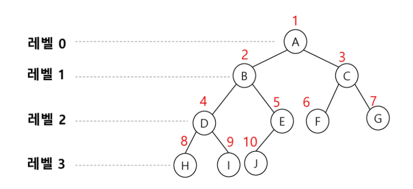

트리
- 비선형 구조
- 원소들 간에 1:N 관계를 가지는 자료구조
- 원소들 간에 계층 관계를 가지는 계층형 자료구조
- 상위 원소에서 하위 원소로 내려가면서 확장되는 트리(나무)모양의 구조
용어 정리
- 한 개 이상의 노드로 이루어진 유한집합이며 다음 조건을 만족한다.
- 루트(root) : 노드 중 최상위 노드
- 노드(node) : 트리의 원소
- 간선(edge) : 노드를 연결하는 선, 부모 노드와 자식 노드를 연결
- 루트 노드(root node) : 트리의 시작 노드
- 형제 노드(sibling node) : 같은 부모 노드의 자식 노드들
- 조상 노드 : 간선을 따라 루트 노드까지 이르는 경로에 있는 모든 노드들
- 서브 트리(subtree) : 부모 노드와 연결된 간선을 끊었을 때 생성되는 트리
- 자손 노드 : 서브 트리에 있는 하위 레벨의 노드들
- 차수(degree)
- 노드의 차수 : 노드에 연결된 자식 노드의 수
- 트리의 차수 : 트리에 있는 노드의 차수 중에서 가장 큰 값
- 단말 노드(leaf node) : 차수가 0 인 노드. 자식 노드가 없는 노드
- 높이 (=레벨)
- 노드의 높이 : 루트에서 노드에 이르는 간선의 수. 노드의 레벨
- 트리의 높이 : 트리에 있는 노드의 높이 중에서 가장 큰 값. 최대 체벨

이진 트리

- 모든 노드들이 2개의 서브트리를 갖는 특별한 형태의 트리
- 각 노드가 자식 노드를 최대한 2개 까지만 가질 수 있는 트리
- 왼쪽 자식 노드 (left child node)
- 오른쪽 자식 노드 (right child node)
- 레벨 i 에서의 노드의 최대 개수는
2^i개 - 높이가 h 인 이진트리가 가질 수 있는 노드의 최소 개수는
h+1개, 최대 개수는2^(h+1)-1개가 된다.
포화 이진 트리 (Full Binary Tree)
- 모든 레벨에 노드가 포화 상태로 차 있는 이진 트리
- 높이가 h일 때, 최대의 노드 개수인
2^(h+1)-1의 노드를 가진 이진 트리 - 루트를 1번으로 하여
2^(h+1)-1까지 정해진 위치에 대한 노드 번호를 가짐
완전 이진 트리 (Complete Binary Tree)
- 높이가 h 이고 노드 수가 n개 일 때, 포화 이진트리의 노드번호 1번부터 n 번까지 빈자리가 없는 이진트리
편향 이진 트리 (Skewed Binary Tree)
- 높이 h 에 대한 최소 개수의 노드를 가지면서 한쪽 방향의 자식 노드만을 가진 이진 트리
- 왼쪽 편향 이진 트리
- 오른쪽 편향 이진 트리
순회 (traversal)
트리는 비 선형 구조이기 때문에 선형 구조에서와 같이 선후 연결 관계를 알 수 없다. 따라서 특별한 방법이 필요하다.
- 트리의 각 노드를 중복되지 않게 전부 방문(visit)하는 것
- 3가지의 기본적인 순회방법
- 전위순회 (preorder traversal) : 루트-좌-우
- 중위순회 (inorder traversal) : 좌-루트-우
- 후위순회 (postorder traversal) : 좌-우-루트
전위순회 (preorder traversal)
1 | def preorder_traverse(T): |

중위순회 (inorder traversal)
1 | def preorder_traverse(T): |

후위순회 (postorder traversal)
1 | def preorder_traverse(T): |

이진트리의 표현
배열을 이용한 이진 트리의 표현

이진트리에 각 노드 번호를 다음과 같이 부여
루트의 번호를 1로 함
레벨 n 에 있는 노드에 대하여 왼쪽부터 오른쪽으로 2^n 부터 2^(n+1)-1 까지 번호를 차례로 부여
노드번호의 성질
- 노드 번호가 i인 노드의 부모 노드 번호? i//2
- 노드 번호가 i인 노드의 왼쪽 자식 노드 번호? 2*i
- 노드 번호가 i인 노드의 오른쪽 자식 노드 번호? 2*i+1
- 레벨 n 의 노드 번호 시작 번호는? 2^n
이진트리 저장 및 순회 실습 코드
1 | ''' |
배열을 이용한 이진 트리의 표현의 단점
- 편향 이진 트리의 경우에 사용하지 않는 배열 원소에 대한 메모리 공간 낭비 발생
- 트리의 중간에 새로운 노드를 삽입하거나 기존의 노드를 삭제할 경우 배열의 크기 변경 어려워 비효율적
연결리스트를 이용한 이진트리의 표현
- 이진 트리의 모든 노드는 최대 2개의 자식 노드를 가지므로 일정한 구조의 단순 연결 리스트 노드를 사용하여 구현
이진탐색 트리
- 탐색 작업을 효율적으로 하기 위한 자료구조
- 모든 원소를 서로 다른 유일한 키를 갖는다.
- Key(왼쪽 서브 트리) < Key(루트 노드) < Key(오른쪽 서브 트리)
- 중위 순회 하면 오름차순으로 정렬된 값을 얻을 수 있다.
탐색 연산
- 루트에서 탐색 시작
- 탐색할 키 값 x를 루트 노드의 키 값 k와 비교
- x == k : 탐색 성공
- x < k : 루트노드의 왼쪽 서브트리에 대해 탐색연산 수행
- x > k : 루트노드의 오른쪽 서브트리에 대해 탐색연산 수행
- 서브 트리에 대해서 순환적으로 탐색연산을 반복
- 탐색 수행할 서브트리가 없으면 탐색 실패
삽입 연산
- 먼저 탐색 연산을 수행
- 삽입할 원소와 같은 원소가 트리에 있으면 삽입할 수 없으므로, 같은 원소가 트리에 있는지 탐색하여 확인
- 탐색에서 실패가 결정되는 위치가 삽입 위치가 된다.
- 탐색 실패한 위치에 원소를 삽입
성능
- 탐색, 삽입, 삭제 시간은 트리의 높이만큼 시간이 걸린다.
- 평균의 경우
- 이진트리가 균형적으로 생성되어 있는 경우 : O(log n)
- 최악의 경우
- 한쪽으로 치우친 편향 이진 트리의 경우 : O(n)
- 순차 탐색과 시간 복잡도가 같다.
힙 (heap)
- 완전 이진 트리에 있는 노드 중에서 키 값이 가장 큰 노드나 키 값이 가장 작은 노드를 찾기 위해 만든 자료구조
- 최대 힙 (max heap)
- 키 값이 가장 큰 노드를 찾기 위한 완전 이진 트리
- 루트 노드 : 키 값이 가장 큰 노드
- 최소 힙 (min heap)
- 키 값이 가장 작은 노드를 찾기 위한 완전 이진 트리
- 루트 노드 : 키 값이 가장 작은 노드

힙 연산 - 삽입

힙 연산 - 삭제
- 힙에서는 루트 노드의 원소만을 삭제할 수 있다.
- 루트 노드의 원소를 삭제하여 반환한다.
- 힙의 종류에 따라 최대값 또는 최소값을 구할 수 있다.

힙의 활용
- 우선순위 큐
- 우선순위 큐를 구현하는 가장 효과적인 방법이 힙을 사용하는 것이다.
- 노드 하나의 추가/삭제가 시간 복잡도 O(logN)이고 최대값/최소값을 O(1)에 구할 수 있다.
- 완전 정렬보다 관리 비용이 적다.
배열을 통해 트리 형태를 쉽게 구현할 수 있다.
- 부모나 자식 노드를 O(1)연산으로 쉽게 찾을 수 있다.
- n위치에 있는 노드의 자식은 2n과 2n+1에 위치한다.
- 완전 이진 트리의 특성에 의해 추가/삭제의 위치는 자료의 시작과 끝 인덱스로 쉽게 판단할 수 있다.
- 힙 정렬
- 힙 자료구조를 이용해서 이진탐색과 유사한 방법으로 수행된다.
- 정렬을 위한 2단계
- 하나의 값을 힙에 삽입한다. (반복)
- 힙에서 순차적(오름차순)으로 값을 하나씩 제거한다.
- 힙 정렬의 시간 복잡도
- N개의 노드 삽입 연산 + N개의 노드 삭제 연산
- 삽입과 삭제 연산은 각각 O(logN)이다.
- 따라서, 전체 정렬을 O(NlogN)이다.
- 힙 정렬은 배열에 저장된 자료를 정렬하기에 유용하다.